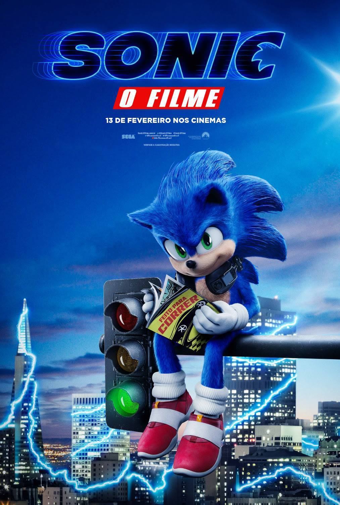
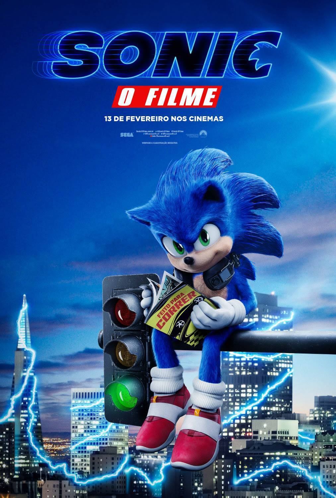

Detalhes do item:
1. Sonic O Filme(2020) traz o icônico ouriço azul da Sega em uma aventura live-action. A trama segue Sonic, um alienígena superveloz que se esconde na Terra e forma uma parceria com o xerife
Tom Wachowski(James Marsden) para recuperar suas esferas de energia.
2. O antagonista, Dr. Robotnik (Jim Carrey), é um cientista genial e megalomaníaco que busca capturar Sonic para explorar seus poderes.
3. O filme equilibra humor, cenas de ação dinâmicas e momentos emocionantes, destacando a amizade entre Sonic e Tom.
4. A animação do personagem principal foi redesenhada após críticas ao design inicial, resultando em uma versão mais fiel aos jogos.
5. Com um tom leve e aventuras cheias de referências nostálgicas, o longa agradou fãs e conquistou bilheterias, gerando sequências.

 
